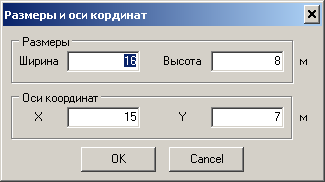
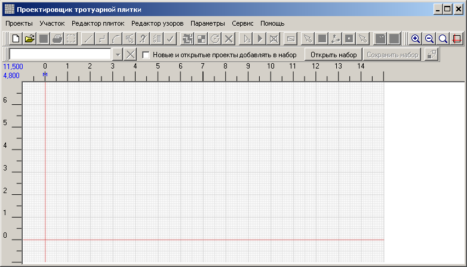

Следует установить размеры чертежа, которых нам будет достаточно для создания
этого проекта. По умолчанию размеры чертежа 50x50 метров, координатные оси проходят по середине этого
пространства. Таким образом, положительная часть осей X и Y составляет 25 м. Для нашего примера это много.
Выбираем меню
Участок >
Размеры. Устанавливаем такие размеры:

Чертёж станет таким:
